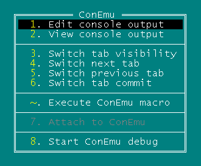
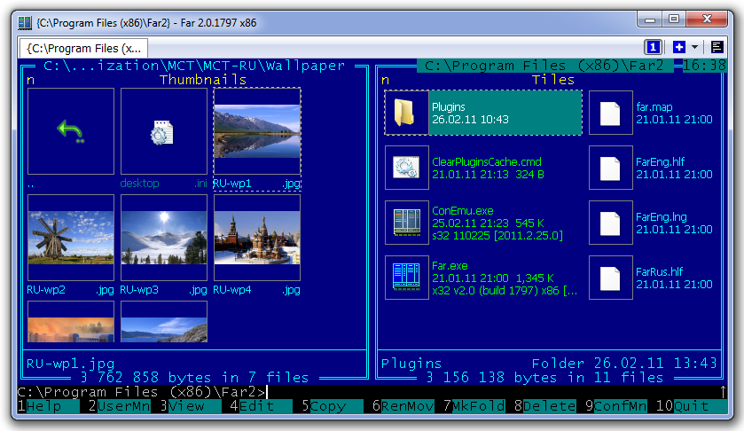
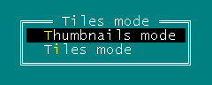
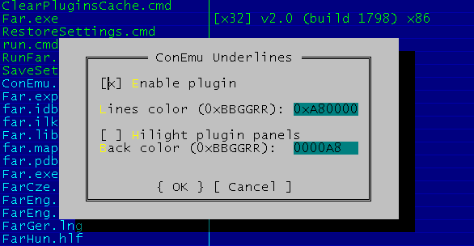
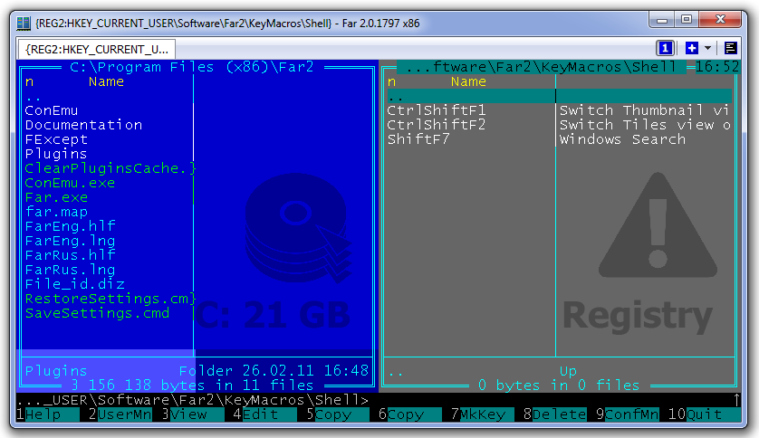
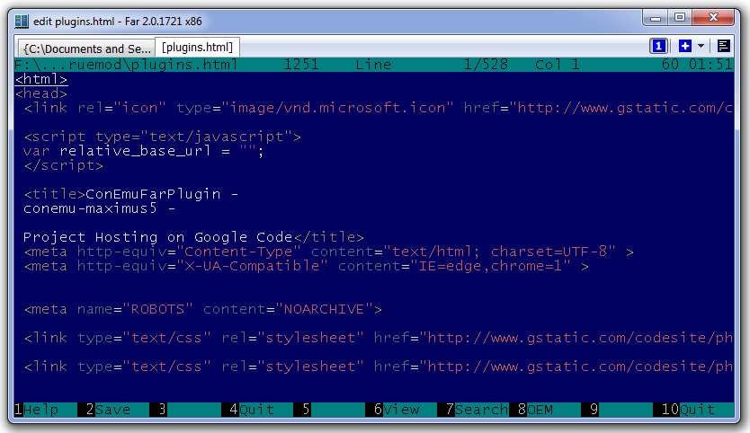

Several Far Manager plugins works in the ConEmu only, others provides advanced features in the ConEmu:
ConEmu.dll (or ConEmu.x64.dll) provide next functionality:
ConEmu plugin itself have no configuration dialog. All its features are available via Far Manager plugin menu (F11), You'll see it as «ConEmu».
ConEmu plugin menu

«Attach to ConEmu» is available only in «clear» console, when You starts FAR without ConEmu.
Enables thumbnails and tiles in Far Manager panels. 
Recommended way for Panel Views activation is Far Manager macro (look at Thumbnails.reg in ConEmu folder).
Another way (direct) is Far Manager plugin menu (F11) («ConEmu Panel Views» item):
.
You may polish Panel Views appearence via ConEmu Settings.
Simple background plugin:
.
This plugin colorize Far panels, display mnemonic picture (drive, network, and so on), and progress bar of used drive space at status line area. ConEmu Background can be customized via Background.xml configuration file. This is «native» analog of PanelColorer plugin.
.
This «third-party» background plugin is originally from here.
This plugin works in plain Far Manager too, but when You choose Far 3.x or Far TrueMod 2.x and run it under ConEmu - You got full true colors in the console (Far editor only in Far TrueMod 2.x) instead of standard 16 (or 32 with Extend foreground colors option) console colors.
Note, You must enable Colorer TrueMod support option.
.